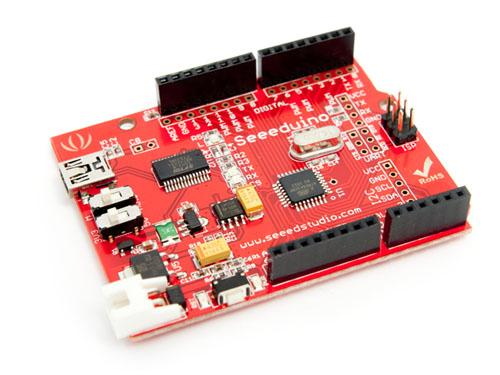

Here is the wiki page for Both Seeeduino V2.21 Atmega 168P and Seeeduino V2.21 Atmega 328P.
Seeeduino is Arduino compatible board. Its design is based on Diecimila scheme, 100% compatible to its existing program, shield and IDEs. On the hardware part, remarkable changes are taken to improve the flexibility and user experience.
 
Here is the Seeeduino FAQ, now the version is v2.21, users can list the Frequently Asked Questions here, example as below:
Answer: Seeeduino is a ...
Answer: Select the "Arduino Dueminalove 328" in the Arduino IDE and also make sure the reset switch is set to AUTO for programming.
Answer: This is a non-authoritative (user-submitted) response. The JST connector is connected to a L1117-50 voltage regulator which takes the input voltage down to 5.0 VDC. The L1117 is a LDO (low-drop out) regulator, so it needs a minimum of +1.2 volts over the regulated voltage to operate. In conclusion, you need a minimum of at least 6.2 VDC but more is preferred. The maximum voltage is 15 volts DC for the regulator, however this assumes best-case scenario for the regulator. To be on the safe side with adequate margins on both ends, you should keep the voltage between 7 VDC and 13 VDC.
""Answer:""M_RST_A switch , turn on 'M' mean when you download the program the board will auto restart , turn on 'A' will not auto restart ,default to turn on 'M'
If you have questions or other better design ideas, you can go to our forum or wish to discuss.
| Revision | Descriptions | Release Date |
|---|---|---|
| Seeeduino V0.9 | Initial public release | |
| Seeeduino v1.1 |
|
|
| Seeeduino v2.12 |
|
|
| Seeeduino v2.2 |
|
Dec 16, 2010 |
| Seeeduino v2.21 |
|
Jan 12, 2011 |
| Seeeduino v3.0 |
|
Jan 1, 2012 |
Bug Tracker is the place you can publish any bugs you think you might have found during use. Please write down what you have to say, your answers will help us improve our products.
The Additional Idea is the place to write your project ideas about this product, or other usages you've found. Or you can write them on Projects page.
Here to buy Seeeduino v2.21 (Atmega 168P) and Seeeduino v3.0 (Atmega 328P) on SEEED Bazaar.
Other related products and resources.
This documentation is licensed under the Creative Commons Attribution-ShareAlike License 3.0 Source code and libraries are licensed under GPL/LGPL, see source code files for details.
Links to external webpages which provide more application ideas, documents/datasheet or software libraries
Copyright (c) 2008-2016 Seeed Development Limited (www.seeedstudio.com / www.seeed.cc)